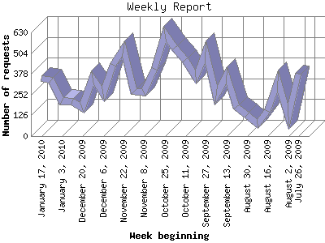

The Weekly Report identifies the activity for each week within the report
time frame. Remember that one page hit can result in several server requests
as the images for each page are loaded.
Note: Depending on the
report time frame for this report the first and last week may not represent
a full seven day week, resulting in lower hits.

| Week beginning | Number of requests | Number of page requests | |
|---|---|---|---|
| 1. | July 26, 2009 | 380 | 205 |
| 2. | August 2, 2009 | 120 | 84 |
| 3. | August 9, 2009 | 337 | 170 |
| 4. | August 16, 2009 | 152 | 89 |
| 5. | August 23, 2009 | 74 | 57 |
| 6. | August 30, 2009 | 130 | 67 |
| 7. | September 6, 2009 | 178 | 81 |
| 8. | September 13, 2009 | 367 | 194 |
| 9. | September 20, 2009 | 247 | 120 |
| 10. | September 27, 2009 | 514 | 189 |
| 11. | October 4, 2009 | 361 | 158 |
| 12. | October 11, 2009 | 463 | 200 |
| 13. | October 18, 2009 | 535 | 237 |
| 14. | October 25, 2009 | 620 | 266 |
| 15. | November 1, 2009 | 409 | 188 |
| 16. | November 8, 2009 | 265 | 111 |
| 17. | November 15, 2009 | 273 | 130 |
| 18. | November 22, 2009 | 533 | 215 |
| 19. | November 29, 2009 | 433 | 172 |
| 20. | December 6, 2009 | 257 | 117 |
| 21. | December 13, 2009 | 353 | 158 |
| 22. | December 20, 2009 | 172 | 78 |
| 23. | December 27, 2009 | 213 | 91 |
| 24. | January 3, 2010 | 213 | 102 |
| 25. | January 10, 2010 | 342 | 161 |
| 26. | January 17, 2010 | 349 | 185 |
Most active week beginning October 25, 2009 : 266 pages sent. 620 requests handled.
Weekly average: 147 pages sent. 318 requests handled.
This report was generated on January 23, 2010 22:36.
Report time frame July 30, 2009 00:39 to January 23, 2010 17:15.
| Web statistics report produced by: analog 5.1 / Report Magic 2.21 |